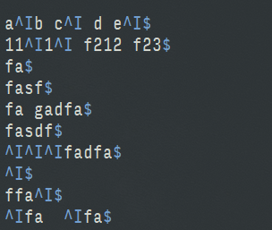
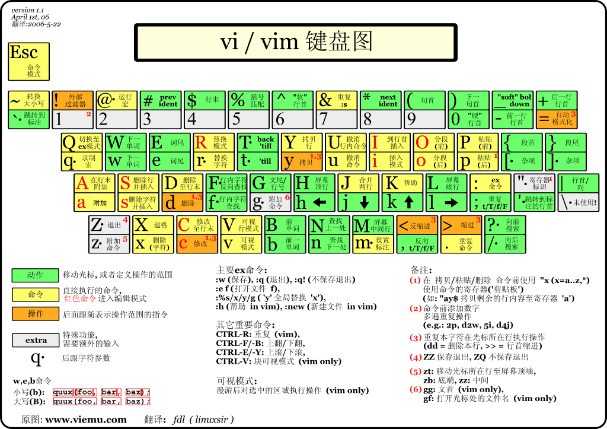

[TOC]
VIM
参考资料:
- 官方文档
- 中文文档
- vim文档
- 菜鸟教程
- Vim 从入门到精通
- 中文速查表
- http://www.cnblogs.com/jiqingwu/archive/2012/06/14/vim_notes.html#id60
模式
有四种模式
- normal(普通模式)insert(插入模式),command(命令行模式),visual(可视化模式)
查看帮助
# 查看帮助
:help <命令>
# 在一个新的tab查看帮助
:tab help
# 退出帮助
:q
Set 设置
显示set所有的选项
set all
查看当前某个设置的值, 在结尾加 ? 可以显示当前的值
:set listchars?
set list 显示隐藏字符
Vim是不会显示space,tabs,newlines,trailing space,wrapped lines等不可见字符的。 显示隐藏字符, 制表符显示为 '^I', 行尾符显示为 '$', 空格显示为一个空白字符
:set list

重新隐藏不可见字符
:set nolist
切换不可见字符的显示隐藏
:set list!
设置显示的字符
:set listchars
# 查看替换符号的帮助, 缩写为 lcs
:help 'listchars'
# 用.显示空格, ^I显示tab
其中，特殊符号是在插入状态下，点击快捷键Ctrl-k，然后键入编码来输入的。比如，中点是由.M输入；左书名号是由<<输入，右书名号是由>>输入。
查看可以输入的特殊字符
:digraphs
搜索替换
搜索
搜索在普通模式下以 (/) 开头输入要搜索的内容, 搜索换行符用 \n 如:
/foo\nbar
# 可以匹配到
foo
bar
替换
替换使用s命令
# 把所在行的haha替换为xixi, 只替换找到的第一个, 斜杠表示多个命令的分割
:s/haha/xixi/
# 结尾加g表示该行所有, 把所在行的haha替换为xixi, 替换该行所有的
:s/haha/xixi/g
# s前面可以加数字表示第几行, 把第三行的haha替换为xixi, 替换该行所有的
:3s/haha/xixi/g
# %表示所有行, 把全文的haha替换为xixi
:%s/haha/xixi/g
# 把全文所有的tab替换为空格
:%s/\t/ /g
移动

字符移动
在Vim的Normal模式里（如果你在Visual模式或者Insert模式，可以按
在Vim中多数操作都支持数字前缀，比如10j可以向下移动10行。
单词移动
多数情况下单词移动比字符移动更加高效。 w移动光标到下一个单词的词首，b移动光标到上一个单词的词首；e移动光标到下一个单词的结尾，ge移动光标到上一个单词的结尾。
单词移动同样支持数字前缀，比如4w可以向后移动4个单词。连续的标点符号算一个单词。
有趣的是，W, B, E具有同样的功能，只不过它是用空格来分隔单词的，可以跳地更远~
^到行首，$到行尾。
拷贝一行：^y$。
相对屏幕移动
通过c-f向下翻页，c-b向上翻页；c-e逐行下滚，c-y逐行上滚。这在几乎所有Unix软件中都是好使的，比如man和less。 H可以移动到屏幕的首行，L到屏幕尾行，M到屏幕中间。
zt可以置顶当前行，通常用来查看完整的下文，比如函数、类的定义。 zz将当前行移到屏幕中部，zb移到底部。
文件中移动
通过:10可以直接移动光标到文件第10行。如果你看不到行号，可以:set number。 gg移到文件首行，G移到尾行。
拷贝整个文件：ggyG。
/xx可以查找某个单词xx，n查找下一个，N查找上一个。 在光标跳转之后，可以通过c-o返回上一个光标位置，c-i跳到下一个光标位置。
?xx可以反向查找，q/, q?可以列出查找历史。
主题配置
配置 solarized
$ git clone git://github.com/altercation/solarized.git
拷贝颜色文件
$ cd solarized
$ cd vim-colors-solarized/colors
$ mkdir -p ~/.vim/colors
$ cp solarized.vim ~/.vim/colors/
更改 vim 配置
$ vi ~/.vimrc
syntax enable
set background=dark
colorscheme solarized